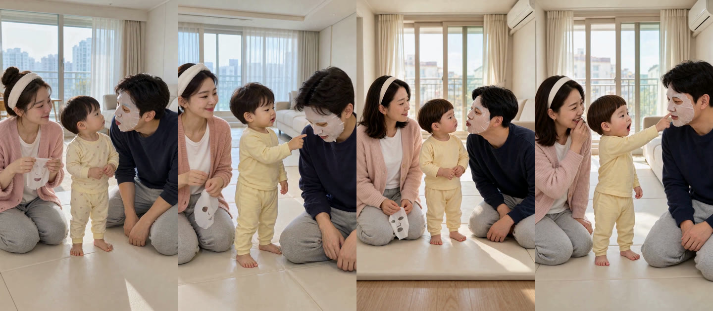
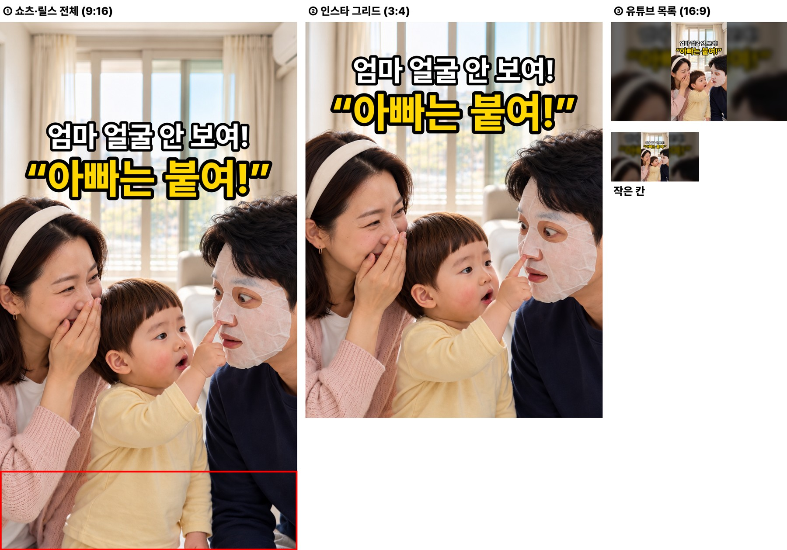
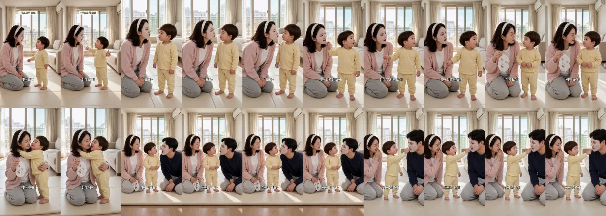

마스크팩 붙인 엄마가 뽀뽀하려 하자 두 살이 한 말
doyoon-maskpack-kiss-001 · R13 · 19.7초 · 7컷 · 6·7번(아빠 구간) 다시 만든 판
고친 것 (대표님 «아빠 나오는 구간에 도윤이가 다른 애기로 바꼈는데 · 머리스타일도 다르고»)
원인: 6·7번은 H3 가 아니라 «시작 그림»부터 다른 아기(점무늬 잠옷·다른 머리)였고, 엄마도 올림머리였습니다. 아빠가 나오는 컷은 참조 사진이 7장인데 지시문이 어느 사진이 도윤이 얼굴·머리·옷인지 짚지 않았고, 제가 엄마 옷 문장에 «머리띠로 머리를 넘긴다»고 써서 올림머리를 불렀습니다. 검수 때 시선만 보고 컷끼리 얼굴·머리를 대조하지 않았습니다.
막는 장치: 모든 시작 그림에 «얼굴·머리·옷은 인물 시트와 각자 참조 그대로, 전 컷 같다» 문장 · 시작 그림 검토 화면 첫 줄에 인물 시트와 전 컷을 나란히 · 시험 1개 · 품질 장부 Q-20261029-01.
다시 만든 것: 6·7번 시작 그림 → 6·7번 H3. 7번은 첫 판에서 엄마가 가운데로 오며 자리가 바뀌어(자동 검사에서 걸림) 한 번 더 뽑았습니다. 1~5번은 그대로입니다.
전(R8) · 후(R13) — 6번·7번

왼쪽 두 장 = 전(R8 6·7번: 점무늬 옷·다른 머리 아기, 엄마 올림머리) · 오른쪽 두 장 = 후(R13: 1~5번과 같은 바가지 머리·민무늬 노란 내복, 엄마 풀어 내린 머리)
봐 주셔야 할 것
- 13초 이후 도윤이·엄마 — 앞 컷들과 같은 아이·같은 머리인지.
- 6번 — 아빠가 입술을 내밀고 기다리는 장면, 화면 아래에 놀이매트 끝과 마룻바닥이 조금 보입니다(같은 거실).
- 7번 끝 — 도윤이가 팩을 가리킨 채 엄마가 입 가리고 웃는 장면으로 끝납니다.
컷별 실측
| 컷 | 대사 | 받아쓰기 | 음높이 | 시선 |
|---|---|---|---|---|
| 1 | 도윤 «엄마 뽀뽀!» | 엄마 뽀뽀~ | 421Hz | 도윤→엄마(몸 돌려 두 팔 벌림) |
| 2 | 엄마 «뽀뽀~»(팩) | 뽀뽀~ | 276Hz | 엄마→도윤 |
| 3 | 도윤 «엄마 얼굴 안 보여!» | 엄마 얼굴 안 보여 | 372Hz | 도윤 고개 돌림·손 듦 |
| 4 | 엄마 «이제 보여?»(뗀 팩) | 이제 보여? | 192Hz | 엄마→도윤 |
| 5 | 도윤 «엄마 예뻐!» | 엄마 예뻐 | 337Hz | 도윤→엄마(끌어안음) |
| 6 | 아빠 «아빠도 뽀뽀~»(팩) | 아빠도 뽀뽀~ | 142Hz | 아빠→도윤 |
| 7 | 도윤 «아빠는 붙여!» | 아빠는 붙여 | 410Hz | 도윤→아빠(팩 가리킴) |
D6 시작 그림 이탈·컷 안 튐 검사 7컷 통과 · D8 통과 · H3 이 편 누계 21회(약 $2.1)
썸네일 (세 화면)

완성본 1초 간격
